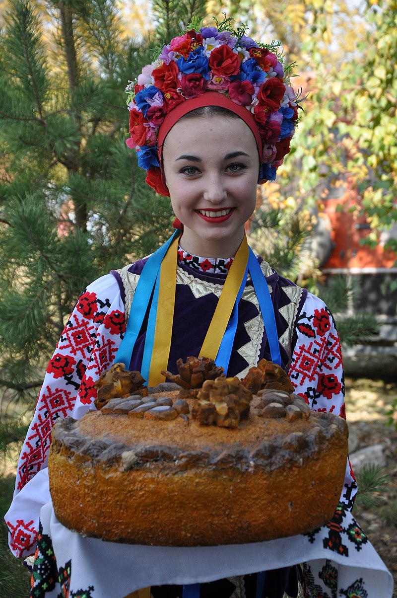

Про Україну

Україна - держава у Східній та частково Центральній Європі. Межує з Румунією й Молдовою на південному заході, з Угорщиною, Словаччиною та Польщею на заході, з Білоруссю на півночі та з Росією на сході й північному сході.Південь України омивається Чорним та Азовським морями. Морські кордони вона має з Румунією і Росією. Столиця - місто Київ.
Найбільша за площею країна серед повністю розташованих у Європі.
Україна є унітарною державою, складається з 24 областей та Автономної Республіки Крим.
Україна є парламентсько-президентською республікою. Органом законодавчої влади є Верховна Рада України. Органом виконавчої влади є Кабінет Міністрів України на чолі з Прем'єр-міністром України. Президент України є главою держави.
Більшість громадян України є християнами, переважно православного віросповідання, також на заході України поширений греко-католицизм.
Офіційна мова - українська. населення України становить понад 41 мільйон осіб.
Географія

Загальна площа України становить 603 700 км² вона становить 5,7 % території Європи й 0,44 % території світу.
Площа виключної морської економічної зони України становить 72 658 км².
Територія України витягнута із заходу на схід на 1316 км і з півночі на південь на 893 км, лежить приблизно між 52° 20′ та 44° 23′ північної широти й 22° 5′ і 41° 15′ східної довготи.
Загальна протяжність кордонів 6993 км, із них сухопутних 5638 км
У рельєфі України переважають рівнини. В Україні знаходиться найвища точка Східноєвропейської рівнини — гора Берда, висотою 515 м над рівнем моря.
Гірські масиви в Україні представлені частиною Карпатських гір — Українськими Карпатами, де розташована найвища вершина України — гора Говерла (2061 м над рівнем моря), й Кримськими горами, найвищою вершиною яких є гора Роман-Кош (1545 м).
Територія України лежить переважно в помірно-континентальній області помірного кліматичного поясу
На території України протікає 63 119 річок і струмків загальною довжиною понад 206 тис. км, із них довжиною 10 км і більше — 3302
Головні річки — Дніпро, Сіверський Донець, Південний Буг, Дністер, Дунай.
Історія
Україна має багату історію, що сягає тисячоліть. На її території існували різні цивілізації, включаючи трипільську культуру, скіфів, сарматів та інші.
Україна проводить свою державність від Русі київських князів династії Рюриковичів IX—XIII століть. У X—XI століттях, Русь була однією з найбільших і найвпливовіших країн Європи.
Після монгольської навали спадкоємцем Русі стало Королівство Руське XIII—XIV століть що згодом було поглинуте Великим князівством Литовським і Королівством Польським. Згодом українські землі були розділені між Російською імперією та Австро-Угорською монархією.
Під час української революції початку XX століття на українських землях постало декілька національних держав, перш за все:
- Українська Центральна Рада (УЦР, 1917—1918)
- Українська Народна Республіка (УНР, 1917—1921)
- Кримська Народна Республіка (1917—1918)
- Українська Держава (1918)
- Західноукраїнська Народна Республіка (1918—1919)
- Кубанська Народна Республіка (1918—1920)
З 1919 року почала створюватися більшовицька Українська Соціалістична Радянська Республіка (УСРР, згодом УРСР), , яка в 1922 році ввійшла до складу Радянського Союзу. Київ став столицею УСРР у 1934 році.
Під час Другої світової війни до УРСР були приєднані частина Західної України й Буджак, згодом Закарпаття, а з 1954 року — Крим.
24 серпня 1991 року Україна проголосила незалежність, що була підтверджена на референдумі 1 грудня 1991 року. Леонід Кравчук став першим президентом України.
Українська Культура
Українська культура — це глибока й багатогранна система традицій, мистецтва, мови та духовності, що формувалася протягом тисячоліть. Вона є відображенням історичного досвіду народу, його боротьби за свободу, любові до землі та прагнення до самовираження.
Особливе місце в українській культурі займає народна творчість — пісні, казки, вишивка, танці та декоративне мистецтво. Вони не лише зберігають пам’ять про минуле, а й формують національну ідентичність. Мова як невід’ємна частина культури — жива, мелодійна, багата на образи й емоції.
Сучасна українська культура активно розвивається, поєднуючи традиції з новими формами мистецтва. Вона звучить у музиці, кіно, літературі, театрах і на вулицях міст. В умовах сьогодення українська культура стала також символом опору, сили духу та єдності нації.
Таким чином, українська культура — це не лише надбання минулого, а й потужна основа для майбутнього, що надихає та об’єднує.